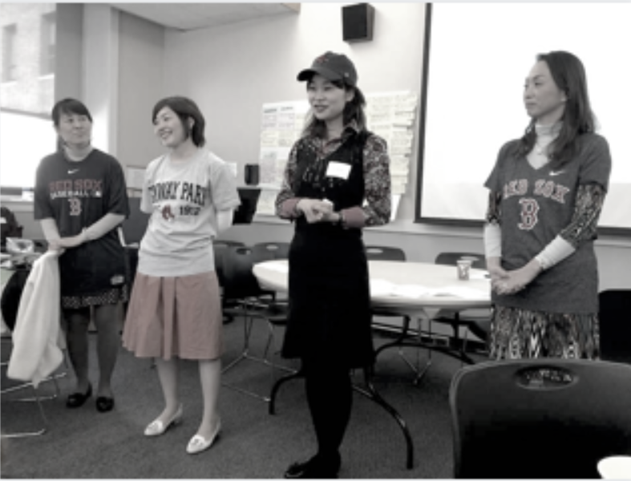

Japanese Women's Leadership Institute
Empowering Japanese women to become leaders and to make positive social change and innovation in Japan.
Tell us your email and we will let you know when applications open again!
Empowering Japanese women to become leaders and to make positive social change and innovation in Japan.
Tell us your email and we will let you know when applications open again!
JWLI empowers Japanese women to become leaders and to make positive social change and innovation in Japan.
The Japanese Women's Leadership Initiative (JWLI) was founded in 2006 by three visionary women in Boston, Massachusetts: Atsuko Toko Fish, Mary Lassen, and Catherine crone Coburn. JWLI brings emerging women leaders, referred to as theFellows, from Japan to Boston to receive four weeks of hands-on experience and training with successful nonprofit organizations in nonprofit management and leadership development. During their stay in Boston, the Fellows Will develop an Action Plan, which Will serve as a step-by-step roadmap to make their dreams of social change a reality. After returning to Japan, the Fellows are expected to make a difference in their communities based on their Action Plans.
Read More
The Fish Family Foundation, operating in conjunction with other Boston- based nonprofit organizations, iS administering JWLI in partnership With Simmons college School of Managements center for Gender in organizations.
In 2010, thanks to the generous funding provided by the U.S. - Japan Foundation, JWLI expanded its Vision to hold public forums Within Japan. Held in 2010, 2012
and 2013, these public forums provided information about the nonprofit sector and the American approach to philanthropy with hopes to inspire women to take leadership roles. The Forum Program reached hundreds of Japanese citizens, advocating for their involvement in addressing the needs of Japanese society.
Photo Caption
Photo Caption

Atsuko Toko Fishretired as a U.S.-Japan cross-cultural consultant, and is currently involved With various social innovative movements as a philanthropist. She is also a trustee of the Fish Family Foundation. Read More
In the wake of 3.11, Atsuko established the Japanese Disaster Relief Fund - Boston (IDRFB) with The Boston Foundation (TBF) and the Japan Society Boston (JSB) to support immediate and mid-term recovery in the affected regions of Tohoku. Atsuko visited Tohoku several times after the disaster to assessed and evaluated the needs of the people and community. In the two years the fund was active for, JDRFB raised approximately $1 million and distributed 24 grants to 19 organizations and projects working directly in Tohoku. It has been reported by the grantees thatJDRFB'S $1 million grants were leveraged to have $6 million of economic impact.

In 2007, the second year of JWLI, the Center for Gender in Organizations (CGO) at the Simmons School of Management in Boston became JWLI'S institutional and academic partner. CGO was selected because of their unique expertise in the areas pertaining to gender and leadership, its program located in the first business school in the world designed specifically for women, and expertise in the area of nonprofit management
Sign Up For Our Newsletter